Explore platform hubs, features and technical documentation.
Explore the main hubs of the iGOT platform and access detailed documentation.
Browse key platform features with user guides, APIs, diagrams and operational details.
Blended Program
Route /app/toc/:programId
Workflow blendedprogram
✓ Verified from repos · 4.8.41 releases · boundaries noted
A Blended Program pairs self-paced online content with classroom sessions, run in batches. A Karmayogi picks a batch that still accepts enrolments and has room, completes any entry steps the batch asks for, and requests a seat. A Program Coordinator, an MDO admin, or both in a fixed order approve the request — or a coordinator nominates the learner directly, or the learner scans a self-enrolment QR in the room. Once the batch is running the learner works through the online content, attends the sessions, hands in assignments and earns the batch certificate.
Each batch has its own dates, enrolment window and seat limit. The page warns when seats are running low and when a batch or every batch is full.
A seat is a request until an approver says yes. Coordinators can nominate learners straight into a batch, and a QR code can let people in the room enrol themselves.
Classroom sessions show date, time, handouts and links. Attendance is marked by the coordinator, or by the learner scanning the session QR on the mobile app at the venue. Assignments are handed in as PDFs and evaluated with marks and feedback.
Opens the program and chooses a batch that is open and has seats
Pre-requisites, a profile form and a short survey, if the batch asks for them
Confirms the batch dates; a schedule clash with another batch is refused
Waits for the coordinator and/or MDO admin; can withdraw while pending
Self-paced content, sessions, assignments, then the certificate
Karmayogi (the learner), MDO Admin (an approver for their organisation), Program Coordinator (PC) (owns the program’s batches, approves, marks attendance, nominates), Lead trainer / co-trainer (bp_program_trainer, coordinator-level, scoped to chosen batches), Instructor (program_instructor, named on a batch), Author / reviewer / publisher.
Batches whose enrolment end date has passed are not offered (and on web a batch with no end date is never enrollable). Seat state comes from a per-batch status count: enrolled = approved requests, applied = everything except withdrawn. The page warns at 80% full and when every batch is full.
learner/course/v1/batch/list · workflow/blendedprogram/enrol/status/countMandatory pre-requisite resources first; then (web) a client-side clash check; then a profile form if the batch sets userProfileFileds (with a cadre eligibility check when cadreList is set); then the program survey (wfSurveyLink). Answers are saved before the final confirmation, so cancelling leaves them submitted.
forms/v2/getFormById · POST forms/v2/saveFormSubmitThe server re-checks volunteer eligibility, seat room (with a 20% request-time buffer) and schedule clash, writes a request at ENROLL_IS_IN_PROGRESS and returns; a Kafka consumer then moves it into the first approval state.
workflow/blendedprogram/enrolNo reason is captured. Web disables it once the first approver of a two-step route has acted; neither web nor mobile offers it after approval. A withdrawal never un-enrols; only a removal does.
workflow/blendedprogram/unenrol (action WITHDRAW)For programs with selfEnrollment = Yes. The app checks the QR matches the program and a batch, the enrolment end date, the seat state and — if the batch has a latlong — a 1000 m radius. The server approves on the spot, with no approver.
workflow/blendedprogram/qr/enrolmentsStart needs an APPROVED request and a batch in progress; a countdown shows until then. Sessions come from the batch’s sessionDetails_v2; web shows attendance (status 2 = marked) but cannot mark it.
learner/course/v4/user/enrollment/details · read/content-progres/:courseIdSession must be live (start to start + whole hours + 1 h), the phone within 1000 m of the batch latlong, and the QR must match the tapped session and batch. It is a plain progress write on the session node; a batch without latlong cannot mark attendance on mobile.
course/v5/content/state/update (status 2, 100%)PDF only; web checks the integer MB > 5, mobile 5 MB, the store 5000 KB. Draft then submit; the web preview’s “Discard” actually saves a draft. No due date exists in the learner code.
assignment/v1/search · storage/v1/bp/assignment/answer/… · PUT assignment/v1/submitDraft · POST assignment/v1/submitThe batch page’s New requests tab lists SEND_FOR_PC_APPROVAL items oldest first. Approve asks for confirmation; Reject requires a reason (≤ 500 chars). The console acts on the PC step only.
workflow/blendedprogram/searchV2/pc · update/pcExport the pending queue, fill the action column and upload (UI ≤ 30 rows). The server validates every row first — any bad row rejects the file — then applies each with the normal seat, start-date and clash rules.
workflow/blendedprogram/getUserApprovalDataInCsv · bulkApprovalDataFromCsv/:contentIdThe workflow endpoints for MDO exist (update/mdo, searchV2/mdo, admin/enrol, remove/mdo), but no screen in the attached UI repos calls them. Verification boundary: the MDO-side UI, if any, is outside the attached repos.
workflow/blendedprogram/update/mdo · admin/enrolWrites the request straight to APPROVED: ≤ 200 users per call, PC overrides an earlier MDO or self request, MDO overrides only self, hard seat cap, clash check; per-user results come back. Hidden from instructors.
workflow/blendedprogram/nominateBefore the batch starts. The request becomes REMOVED and an un-enrol goes to the course service.
workflow/blendedprogram/remove/approved/userEnabled from the session’s start date until batch end + 7 days (a Creation Portal rule). Present writes 2 / 100%, absent 0 / 0%; the learner is emailed.
blendedprogram/v1/update/progressMarks 1–99 999 (not above the maximum) and feedback ≤ 500 chars. Deleting an assignment in the UI removes it from the list only.
assignment/v1/feedback · v1/notifyAssignment/evaluateEnrollment (v1) and Consumption (v2) reports, asynchronous via Kafka; the v2 report has no session or attendance columns — those exist only in the nightly Spark CSV.
bp/v1/generate/report · bp/v2/generate/report · bp/v2/bpreport/listCreate with the Blended Program radio; hierarchy holds Modules, Resources, Session Templates, optional Pre / Final assessments (Course children are stripped on save); program fields include duration, approval type, self-enrolment, batch settings and ≤ 5 coordinators; review, publish (children first). Retire only via the generic retire call.
action/content/v3/create · PATCH …/hierarchy/update · DELETE v1/content/retireAdd coordinators and National / State lead trainers (≤ 5 each) from the types in the program’s batch settings; removal is blocked while they own or co-train an active batch.
program/coordinator/list/:doId · PUT program/coordinator/:doIdSize 1–200 (stored as a string), dates, enrolment end, venue + latlong (needed for QR attendance), instructors, cadre list, profile-field mode; one session card per Session Template. Side effects: profile survey form, co-trainers, default certificate template.
authApi/batch/create · forms/v2/createForm · PATCH course/batch/cert/v1/template/addName and size locked on edit. Delete only before the start date — and it un-enrols every learner and emails them. Archived batches accept only new instructors.
authApi/batch/update · POST learner/course/v1/batch/deleteTwo different PDFs: the self-enrolment QR (needs selfEnrollment = Yes) and one attendance QR per offline session.
batch/v1/enrollment/qrcode/… · batchsesion/qrcode/:courseId/:batchId| Situation | Behaviour |
|---|---|
| Learner in another Blended Program with overlapping dates | The web client check only sees the program being viewed, so it never fires. The server rejects at enrol, and runs the same check on every approve / withdraw, where a hit silently becomes a REJECT. An existing batch that fully encloses the new one is not detected. |
| Batch full | Requests are allowed up to size + 20%; approval and nomination are hard-capped at size. currentBatchSize of 0, missing or a JSON number reads as full. |
| Batch already started | Approvals are refused ("This batch is already in progress") except REJECT/WITHDRAW; removal is refused too. |
| Withdrawal after approval | Not offered by web or mobile. A withdrawn or rejected row never un-enrols. |
| Reject without a reason | Blocked in the Creation Portal; the server does not require one. |
| Attendance | Mobile adds a live-session window and a 1 km fence; a batch with no latlong cannot mark attendance on mobile. |
CourseRoute /app/toc/:courseId✓ Verified from repos · Aug 2026The building block of the Learning Hub. Unlike a Blended Program, a Course has no approval workflow: tapping Enrol writes the enrolment directly and the course lands in My Learning at 0%. Progress is tracked per content node, Karma Points accrue on completion events, and a certificate issues when every mandatory node is complete.
One call, no approvers — the contrast that defines every other category.
Every video, PDF and quiz reports its own state; the course rolls them up.
Karma Points and certificates hang off the same completion signal.
From the TOC page, one click enrols into the course's batch. Re-clicking is safe; the record is keyed on user + course + batch.
learner/course/v1/enrolThe viewer writes real-time progress; lastReadContentId powers the Resume button back into the exact node.
content/v2/state/read · user/realTimeProgress/updateUnenroll is soft — the course leaves My Learning but history and any earned certificate stay.
course/v2/unenrollAt 100% the learner claims Karma Points and downloads the certificate; ratings and share-with-a-colleague close the loop.
claimkarmapoints · GET cohorts/course/batch/cert/download/:id · POST user/rating · user/v1/content/recommendCurated ProgramEnrol curatedprogram/v1/enrol✓ Verified from repos · Aug 2026A parent collection whose children are ordinary courses. Enrolling in the program auto-assigns the learner into its batch in one call — no approval, no batch picking — and the program's completion is computed from the child courses' individual enrolments. The sibling category Moderated Program uses the same mechanics through a separate open-program enrol endpoint.
The enrol call resolves the batch itself.
Parent % is derived by merging each child course's enrolment.
Featured on home strips and campaign pages via curated collections.
One call; the response carries the assigned batch. Moderated Programs route to the open-program variant of the same call.
curatedprogram/v1/enrol · openprogram/v1/enrolEach child behaves as a normal course; the parent card shows the merged percentage and the next course to take.
enrollment/details · POST course/v1/hierarchy/:idWhen the roll-up reaches 100%, program-level completion triggers the certificate exactly as for a course.
cohorts/course/batch/cert/download/:idBuilt in the Creation Portal as a collection of existing courses, through the same create → review → publish cycle.
action/content/create · content/hierarchy/update · content/v3/publish/:idcb-ext-course-serviceAPI user/v2/assignedcourses✓ Backend verified from sourceThe learner-facing view of content assignment: courses an MDO has directed at a user, surfaced as “My Assigned Courses” with mandatory-course nudges. This is the one Learning Hub feature whose backend is fully in the attached repos — CourseAccessController and CourseAccessServiceImpl in cb-ext-course-service.
Assignments resolve from cached access-setting rules, then a composite search finds matching courses.
A dedicated endpoint resolves assigned partner content via the CIOS integration search.
An admin can read any user's assignments through the admin variant.
The portal calls the v2 endpoint with the user's token; the service resolves the org's access-setting rules and returns the matching courses with the learner's enrolment state.
user/v2/assignedcoursesMarketplace/CIOS content assigned by the org is resolved by a separate endpoint against the CIOS search host.
user/v1/assigned/externalcoursesSupport and compliance view: the admin endpoint takes the target userId in the path and answers with that user's assigned set.
admin/user/v2/assignedcourses/:userIdAssigned mandatory courses drive the notification modal and the mandatory-course shelf, with deadlines shown until completion.
/app/learn/mandatory-course · GET content/user/infoStandalone AssessmentLibrary sb-cb-ui-assessment✓ Verified from repos · Aug 2026A question set consumed through the assessment player rather than the content viewer. Questions are fetched separately from the assessment shell (so answers are never shipped with the paper), attempts auto-save, and submission and results run through versioned endpoints currently at v5. The same machinery also powers assessments embedded inside courses and the pre-enrolment assessments some programs require.
Assessment shell and question bodies come from separate reads.
Auto-save during the attempt; submission is explicit.
A dedicated retake endpoint governs re-attempts per assessment.
The player reads the assessment shell (sections, timing, rules), then fetches questions by id in batches as the learner progresses.
assessment/v5/read · question/v5/readAnswers are saved server-side during the attempt, then submitted; the submit API has evolved v2→v5 and old versions remain for embedded/legacy content.
assessment/save · user/evaluate/assessment/submit/v5Result read is versioned alongside submit; retakes are requested per assessment id and honour the configured attempt policy.
user/assessment/v5/result · GET user/assessment/v5/retake/:assessmentIdCreated in the Creation Portal as a question set with its own review/publish cycle; CQF quality checks have their own create/update/autopublish path.
questionset/v1/create · review · publish · cqfquestionset/…Comprehensive Assessment ProgramStatus thin in attached reposCAP appears in the attached repos as a distinct ECourseCategory with three verified behaviours: it is the default deep-link target of the mandatory-notification modal (learners are pushed to it by notification), its cards are exempt from end-date display in the consumption strips, and it has its own section handling in the home-page content strips. Its consumption mechanics are those of the assessment engine documented under Standalone Assessment.
A mandatory notification (modal) deep-links the learner into the CAP by assessment id — discovery is push, not browse.
mandatory-notification-modal → TOC deep linkThe attempt lifecycle is the assessment engine's: read → save → submit → result, with completion feeding the learner's record.
Assignment and tracking ride content assignment + assigned-courses resolution and the standard reports.
Created in the Creation Portal under the CAP category with question sets attached.
action/content/create · questionset/v1/…courseCategory = "Learning Pathway"Status thin backend — content-model overlay, no dedicated serviceA pathway looks like a course laid out as a staircase of up to five milestones, each a small bundle of courses (some mandatory, some optional) ending in its own checkpoint assessment. The next milestone stays locked until the current one's mandatory courses are done and its checkpoint is passed — and every one of those locks is worked out on the learner's own device from ordinary course-progress data, not fetched from a dedicated "pathway progress" API.
courseCategory = "Learning Pathway", with milestones embedded as opaque JSON. There is no attempt-limit/cool-off enforcement anywhere, and several pieces (access control rules, discovery inclusion, certificate/QR/karma issuance) depend on external services or remote config not present in the four repos traced. Treat this page as thorough but bounded by that scope.Every write reuses the generic Content CRUD actors; only the enriched read is pathway-aware.
Web and mobile each independently recompute milestone lock state — no server push, no shared code between them.
Finishing a milestone can award its own certificate, not just one at the very end.
Discovery rides on generic search/listing or the learner web portal's org-targeted curated strips — there's no purpose-built "Explore Pathways" page.
sunbirdigot/v4/searchIf a preliminary assessment is configured, milestone one stays locked until it's passed.
preliminaryAssessmentMandatory courses done → checkpoint unlocks → pass it → next milestone opens immediately, no refresh.
course/v5/content/state/read4-step wizard: metadata, milestone structure, preview, access control — then publish.
action/content/v3/create · action/content/v3/publish/:idapp/learn/bharat-kalpAccess profile flag only, no feature toggleBharat Kalp is a program that only exists for the people invited into it. Members get their own landing page — progress at the top, a carousel of communities to join below — and a “see all” browser where each week's courses, programs, events and resources can be searched and filtered by how far along they are. Everyone else never sees it: the entry points are hidden and a direct link turns them away.
Visibility hangs on a single profile attribute — but the route guard reads it more strictly than the three checks that show the entry points.
Weeks, tabs and content buckets are all shaped by CMS-authored JSON consumed untyped, so a malformed config degrades to an empty page rather than an error.
Four independent calls fan out from the browser — there is no single endpoint that assembles a week for you.
Arrives by direct link, home spotlight card or notification, and sees the progress hero plus a carousel of communities to join.
v1/form/readA community card leads straight into that community's discussion thread.
Searches, picks a week, switches content-type tabs — a tab appears only if that week has something under it.
sunbirdigot/search · cios/v1/search/contentEach card carries the member's own progress — batched for internal content, one call per item for external.
enrollment/details/:userId · GET cios-enroll/…Routes to the right place by content type: internal player for resources, external TOC for CIOS content, or the normal course/program overview.
Entry points stay hidden and a deep link redirects to page-not-found — unless the flag is stored as a string, in which case they see the door but cannot open it.
30-60 days after completion✓ Verified from 8 repos · Sept 2026Some courses come with a peer-validation survey attached by the department. Days after a Karmayogi finishes such a course, they're prompted to answer a short survey, optionally attach proof, and name two or three peers who can vouch for the work. Each peer reviews independently and approves or rejects — a one-shot, unchangeable decision. There is no owning backend service: the survey, the notification/status tracking, and the reporting each live in a separate system, correlated only by shared IDs.
A rejection is a dead end today — no resubmission path exists.
An unreviewed request just sits — nothing reminds or reassigns the peer.
"Expired" is calculated when viewed, never persisted — the underlying row can stay pending indefinitely.
Days after finishing an eligible course, a survey prompt appears; the learner answers, optionally attaches proof, and names 2-3 peers.
peersurvey/submitEach named peer reviews independently and approves or rejects — a decision that can never be changed once made.
peersurvey/submit (review)Attach a survey to a live course: trigger window, lookback, up to two custom questions.
mdo/peersurvey/createGenerate a CSV of submissions and outcomes — async, the admin checks back rather than being notified.
peerValidation/v1/report/initiate/:formIdcb-core-dataCHS is the platform's batch analytics pipeline — the jobs that turn raw activity data into karma points, badges, leaderboards, compliance reports and the BI warehouse. It runs nightly, unattended, and shapes what MDO admins, BI/Looker consumers, the live dashboard, and downstream notification systems see.
Every warehouse write is a full truncate-and-reload on every run — simple to reason about, but a table is genuinely empty (not stale) during a failed or slow sync.
MDO admins download ZIP reports, BI/Looker queries the warehouse, the live dashboard reads Redis directly, and downstream systems consume Kafka/Postgres outboxes — the same pipeline run serves all four differently.
Only 5 of ~46 jobs are chained by code; everything else's run order is enforced by an external, out-of-repo scheduler.
Per-org CSVs are packaged into one password-protected ZIP per org and uploaded to cloud storage.
Counters and leaderboards keyed by ministry/org ID, read straight from Redis.
12 core Postgres tables, or their BigQuery mirror, rebuilt from scratch every run.
50+ Redis keys computed via DuckDB, independent of the slower warehouse sync.
One invocation chains Stage 1 and 4 Stage 2 jobs, logging per-stage duration.
Peer-validation and gamification notifications flow through a Postgres-table outbox, not Kafka, despite class names.
The AI CBP Tool under Mission Karmayogi is being transformed from an isolated prototype into an enterprise-grade, governance-aligned and automated competency ecosystem, integrated with the MDO Portals, the iGOT Platform and SPV workflows.
A CBP Author, typically an MDO Content Creator, nodal officer or HR / training coordinator, works through a structured 8-stage interactive workflow.
Sign in with Keycloak SSO and choose the organisation the work is scoped to.
Download the template, upload one or more orders, and watch roles accumulate with their sources.
The AI extracts designations, weights Work Allocation Orders first and keeps competencies inside KCM.
Every extracted role gets a match status; the author overrides it or asks the SPV to add the designation.
A balanced Top-15 set per designation, with explainable scores, provider priority and a 50-hour cap.
Preview the CBP in any of 12 languages, then send finalized designations for approval.
Track the request, revoke it while pending, and resubmit after a rejection with the reviewer's remarks.
Approved plans reach myiGOT within about 6 hours; the dashboard tracks coverage and training gaps.
Follows the AI CBP Tool How-to-Use Guide. Open a step to see what the user does. Click a screenshot to enlarge it.
Open the AI CBP Tool, sign in with the credentials issued to the department and land on the dashboard.
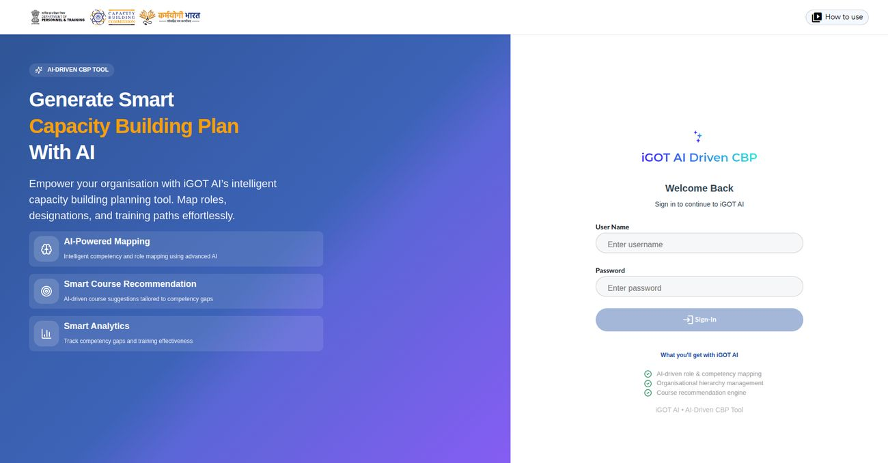
Choose Centre or State, then the State and the Department, and move on to Manage Documents.
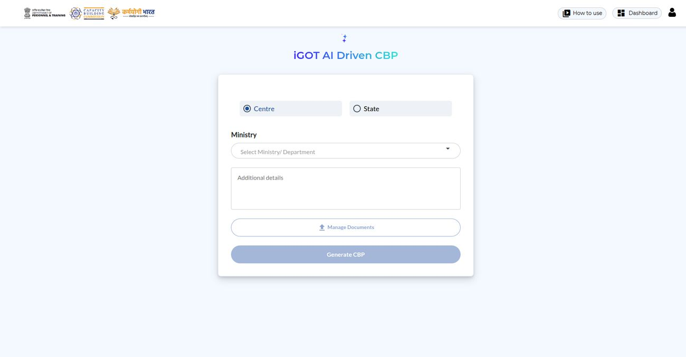
Upload the mandatory Work Allocation Order first, add optional supporting documents, and watch each AI summary complete.
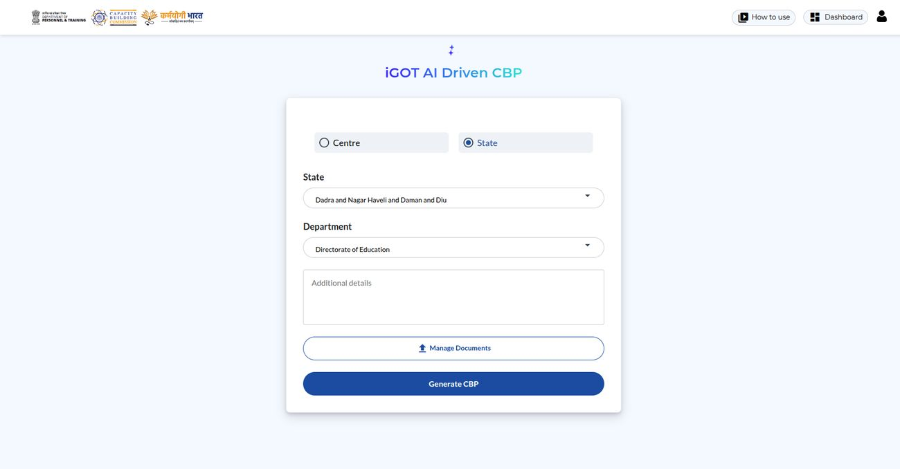
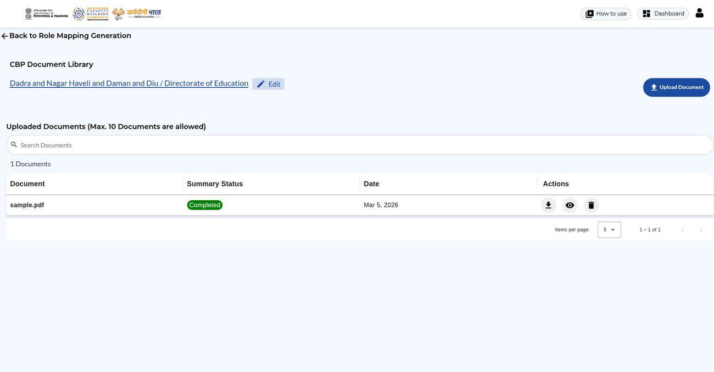
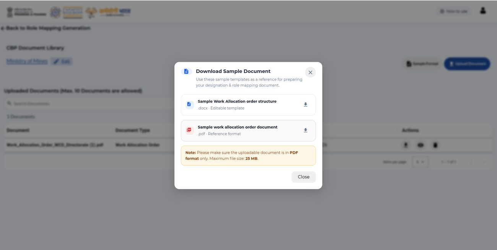
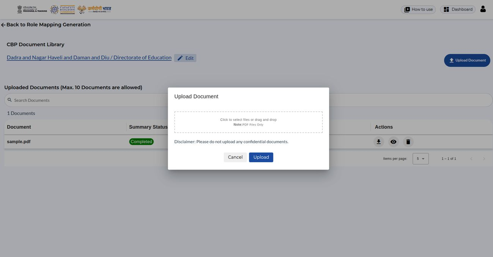
The tool reads the designations in the Work Allocation Order, matches them to the iGOT Designation Master and drafts role mappings and competencies.
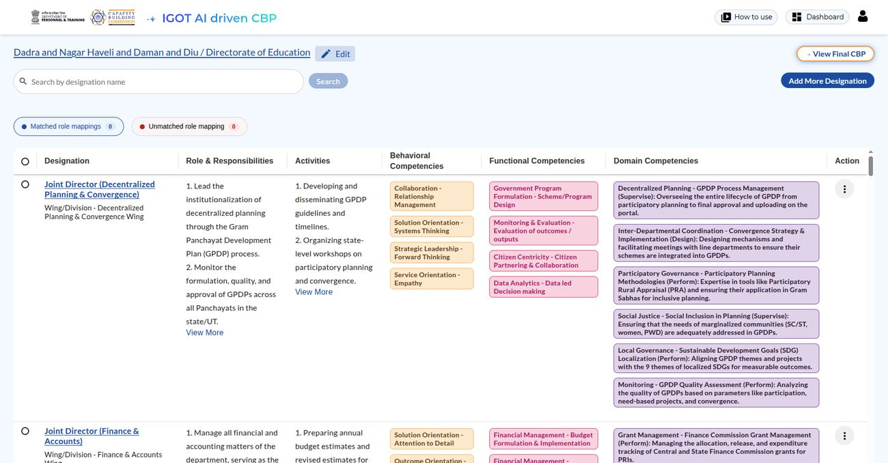
Fix designations the AI could not match by choosing the right one from the iGOT Designation Master.
If a designation does not exist in the master, send it to the SPV Admins for approval instead of forcing a match.
Rearrange the designation hierarchy from the profile menu.
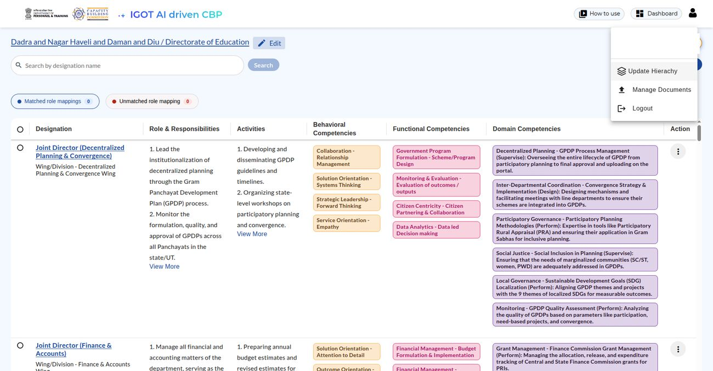
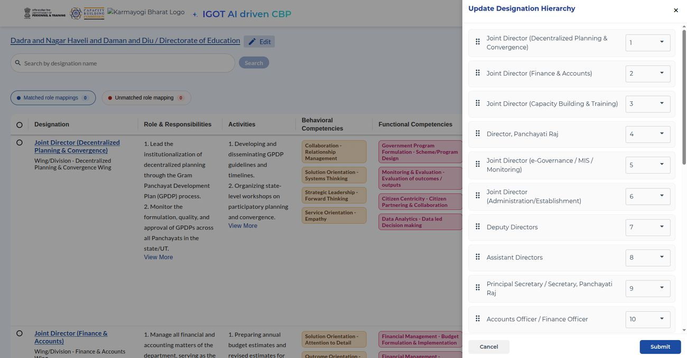
Add designations the AI missed; roles are generated for them too.
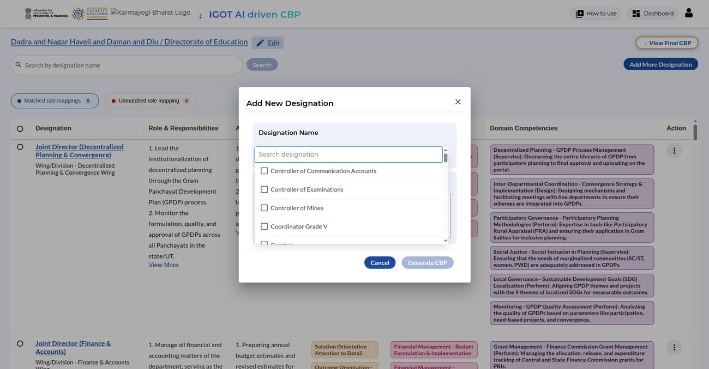
Use the built-in editor to adjust designations, responsibilities, wings, divisions and competencies, then save.
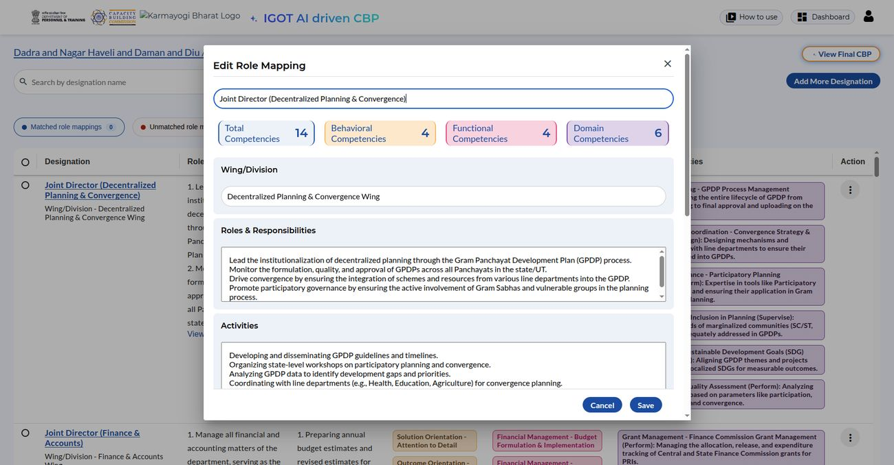
Get AI-suggested courses per role mapping, filter and verify them, add more from iGOT, and save the chosen courses.
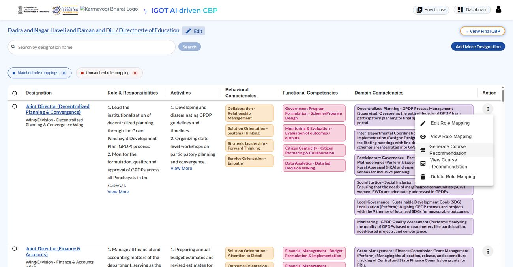
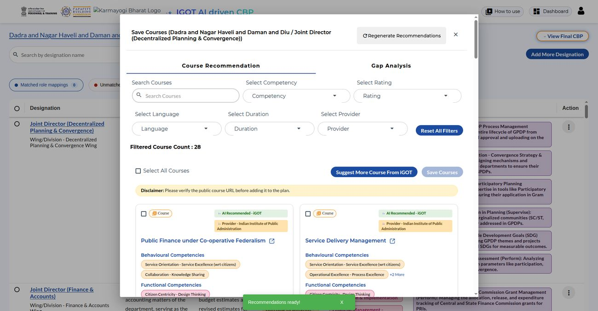
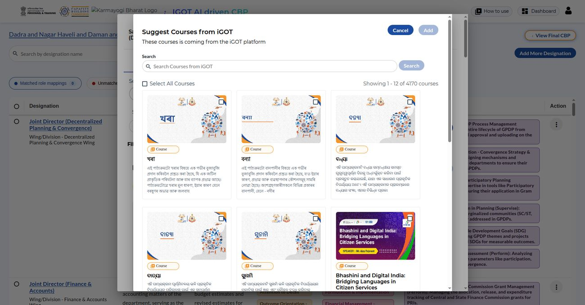
Tick the role mappings, pick the MDO Admin or Leader, name the request and submit; a Request ID is issued at once.
Find a request by its ID, read its status badge, open it, or revoke it while it is pending.
See the full course list for a role mapping, remove courses, and export it as a PDF.
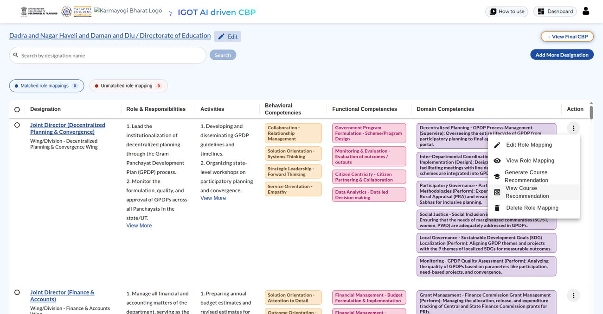
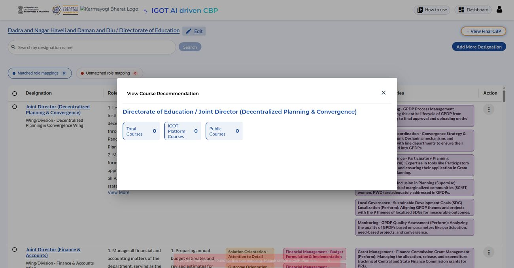
Review all role mappings with their courses and export them.
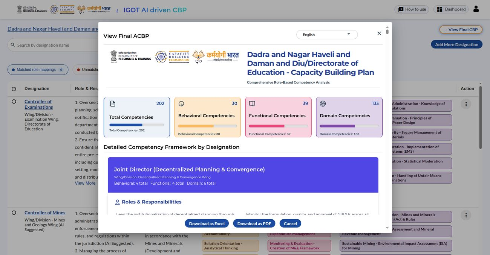
Pick a language in the final CBP pop-up and download the plan in it.
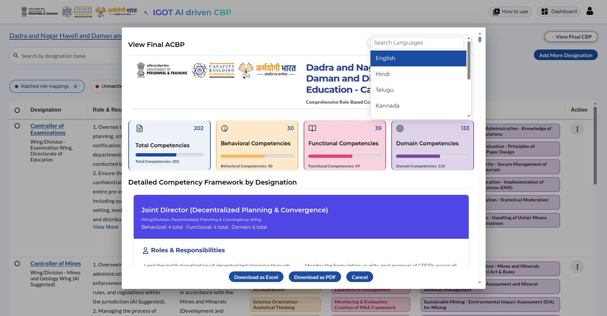
Download the final CBP and the final course recommendations as PDFs for records and official submission.
In the MDO Admin Portal, open AI CBP Requests, review the submitted role mappings and approve or reject them.
In the SPV Admin Portal, review requests to add a designation and approve or reject them.
What to always do and never do when using the tool.
Gather documents, generate and review the CBP, roll out training plans, and plan courses for remaining gaps.
nlp-search · knowledge-platform · knowledge-platform-jobs · sunbird-cb-uiproxy · sunbird-devops · +5 frontends✓ Verified from 10 repos · Sept 2026A user types a query into one of five clients. On the learner web portal and the mobile app, the client first sends the raw query to nlp-search, which uses Gemini to extract a ranked keyword list — the top-priority keyword, not the user's literal text, becomes the actual search term. The three admin/authoring portals skip this step and search on the raw query. Whichever term is used, the client calls a versioned content-search endpoint that lands on knowledge-platform's search-service, which builds an Elasticsearch query against the compositesearch index. That index is kept current by a completely separate pipeline — a Kafka-driven Flink job in knowledge-platform-jobs — not by search-service itself.
/nlp/search and /search/* actually resolve to — lives outside all ten traced repos. See the HLD tab for the full topology and the rest of the honest gaps.nlp-search (LLM keyword extraction) and search-service (Elasticsearch) never call each other — confirmed by a repo-wide grep for "nlp" turning up zero hits in either knowledge-platform repo.
Only the web portal's search-v3 and the mobile app call nlp-search first. The three admin-facing portals search on raw text.
search-service is read-only against Elasticsearch. A Kafka-driven Flink job in knowledge-platform-jobs does all the writing, on a completely independent failure/retry path.
Query entered in the search box
nlp-search returns a ranked keyword list
Top keyword sent to per-category Elasticsearch queries
Facets, sort, and a live typeahead of results
Search saved server-side, not on-device
nlp-search, search-service, Elasticsearch, the indexing pipeline, uiproxy and Kong; LLD covers query-DSL construction and indexing mechanics.Global search, a home-page "today's/live events" widget, or the Event Hub's own see-all/view-all/my-events pages.
sunbirdigot/searchOne of three independent enrollment code paths — which one runs depends on which endpoint the calling client uses, not on any choice the learner makes.
event/batch/enrollAttendance is written to the same Cassandra table used for course content consumption — there is no event-specific consumption table on the write path.
v1/user/event/state/updateA single-page form that immediately publishes on submit — only "Webinar" is enabled as an event type; other types exist in code but are disabled.
event/v4/create → POST event/v4/publishA queue split into "New Requests" (status SentToPublish) and "Past Requests" (status Live) — see the Overview tab's honest gap.
sunbirdigot/searchResolves emails to user IDs, enrolls/completes them, and (unless publicCert) awards karma points and issues a certificate per row.
user/event/bulkOnboardA manual, on-demand CSV upload that recomputes true completion from the batch's end time and always re-pushes a karma-point event — a second, independently-written copy of the same Kafka-publish logic used elsewhere.
user/event/postConsumptionPOST /v1/course/unenrollClient parity mobile full UX · web has none for a plain course✓ Verified from 7 repos · Sept 2026A learner who wants out of a course hits POST /v1/course/unenroll, which refuses if the batch has ended, if they aren't actually enrolled, or — the one hard business rule — if they've already completed the course. Otherwise it flips active to false on the enrolment row and its per-batch lookup row. On mobile this has a full, deliberate UX: a confirmation sheet with a mandatory checkbox, then a mandatory reason-picker, before the call is made. On web, no such UI exists for a plain course at all — the only "unenroll"-labelled action there is withdrawing a still-pending blended-program enrolment request, a structurally different feature.
CONTENT_UN_ENROLLED) is fully built with message templates in cb-notification-service/cb-notification-wrapper, but nothing anywhere in the ten repos scoped to this feature ever calls it — only the older actor-native email path is actually live.Reuses the exact same actor, DAO layer, and Cassandra tables as enroll — the only difference is which validation branch runs and which single field gets written.
Mobile built a complete unenroll UX for a plain course; web built none — its only unenroll action is the unrelated blended-program workflow withdrawal.
Unenroll is refused once course-completion status is COMPLETED, but nothing checks whether a certificate was actually issued.
Overflow "⋮" menu on the TOC page, only for an active, incomplete, plain course
Impact-disclosure sheet, checkbox required to continue
Mandatory multi-select reason + optional comment
POST /api/course/v2/unenroll with courseId, batchId, reasons, comments
Telemetry event fires, enrolment info silently re-fetched
Overflow menu on the TOC page — hidden for a completed, featured, player-mode, or non-plain-course item, or if the showMenuIcon remote config flag is off.
At least one of five fixed reasons must be selected before "Yes, un-enroll" is enabled; comment is optional, ≤500 chars.
Reasons/comments travel in the same request as the unenroll call — the backend validator/actor never reads either field.
/api/course/v2/unenrollOnly offered pre-approval; disables mid-flight in a two-step MDO↔PC chain — a different feature from UC-1–5, same endpoint mobile uses for its own blended withdraw.
apis/proxies/v8/workflow/blendedprogram/unenrolAdmin variant of the same actor path — no confirmed UI caller in any traced repo.
/v1/course/admin/unenrollcourseCategory/secureSettings visibility scheme for Moderated Course/Program/Assessment riding on the generic Sunbird review workflow, and an independent ML text-profanity check on discussion posts.Moderated Course/Program/AssessmentScoping secureSettings.organisation + isVerifiedKarmayogi✓ Verified from 13 repos · Sept 2026"Moderated" is a courseCategory value (Moderated Course/Moderated Program/Moderated Assessment) on ordinary Sunbird course content, restricted to specific MDOs via a secureSettings.organisation array and optionally a secureSettings.isVerifiedKarmayogi toggle — enforced as an Elasticsearch nested-query filter inside knowledge-platform's search actor, not just a client-side hide. Authoring rides the same generic Draft→Review→Live workflow every other content type uses, gated by the CONTENT_REVIEWER role. A structurally unrelated feature also called "moderation" — automatic text-profanity screening of discussion posts — runs through a separate transformer-based service, called asynchronously from cb-discussion-service; a flagged post is soft-hidden from listings, not deleted.
NotificationSubCategory taxonomy is clearly built to support — course/program submitted-for-review, approved, rejected — only the discussion-profanity alert (PROFANITY_CHECK) has a locatable producer across all 13 repos traced, and even that one has a payload-shape mismatch with the endpoint it calls that was never confirmed to work at runtime.It's a courseCategory value plus a secureSettings field on the generic content schema — no separate table, schema, or approval API exists beyond that.
SearchProcessor's nested Elasticsearch query on secureSettings.organisation means a client skipping the filter still can't retrieve out-of-org content.
MDO-restricted course/program visibility and ML discussion-post profanity checking live in different repos, different data models, different notification paths.
Sets courseCategory + org list/verified-toggle via the moderated-course widget
Generic sendToReview/publish calls — same as any other content
Content indexed into knowledge-platform's search with secureSettings intact
SearchActor auto-injects the caller's org if none was passed
Elasticsearch nested query restricts results to the matching org (and verified-status, if unverified)
Picks a Moderated* courseCategory, sets an org checklist and an "Only Verified Karmayogis" toggle — writes to secureSettings.organisation/isVerifiedKarmayogi.
Only shown if the org has matching Live results; unverified learners get an extra isVerifiedKarmayogi=No filter, verified learners don't.
courseCategory + secureSettings.organisation + status=LiveSearchActor auto-injects the caller's org from the x-user-channel-id header if no filter was passed — a real access boundary, not cosmetic hiding.
Post is live immediately; an async Kafka pipeline classifies it (toxic-bert/MuRIL); on a hit it stays in storage but is filtered out of every listing query — not deleted.
/api/v1/moderation/text (content-moderation-service)cb-notification-service defines CONTENT_REVIEW_REQUEST/CONTENT_PUBLISHED/CONTENT_REJECTED, but no producer for any of them exists in the 13 repos traced — only a separate uiproxy email path is confirmed.
/public/signup · /crp/:id/:orgId · /public/welcome · /app/home/onboardingBulk CSV see Bulk Registration✓ Verified from 14 repos · Oct 2026A new Karmayogi starts at the sign-up page (or the app's intro screens), chooses their ministry or state, their organisation and their designation, proves they own their email address and mobile number with one-time codes, and submits. What they have sent is a request, not an account. If they came in through their department's registration link or QR code, or their email domain is already approved, the account is created straight away and an activation email follows; otherwise the request waits for approval first. Department admins can add a person directly, and people with a government single sign-on identity are created on their first login and sent to a short welcome form.
Submitting the form answers "accepted" and stores a registration record; the account, organisation, role and activation email are produced afterwards in the background.
A department's registration link replaces both the email-domain check and the approval step — and each department has only one active link at a time.
Sign-up page, app intro, or a department link / QR code
Ministry or state, organisation, designation
One-time code to the email, another to the mobile
Request accepted — a registration code is emailed if approval is needed
Welcome email with a set-password link once the account exists
Two-step form with email and mobile OTPs; Register stays disabled until both are verified.
/api/user/registration/v1/registerPublic sign-up and mobile direct registration use the domain-validated OTP generate; link flows use the plain one.
/api/otp/ext/v1/generateThe link is checked for activity, the organisation's designations are loaded, and the registration auto-creates the account.
/api/customselfregistration/isregistrationqractiveLink or pre-approved domain → account created at once; otherwise a workflow holds the request. Either way a welcome email with a set-password link follows account creation.
user.register.event / user.register.createUser.eventUnknown SSO users are created with the PUBLIC role; users still in the default holding organisation are treated as first-time and finish a short form.
/apis/proxies/v8/user/basicProfileUpdateRole choices depend on the admin's own role; profile statuses are VERIFIED when designation and group are both given.
apis/protected/v8/user/profileDetails/createUserNeeds imported designations; generating a new link expires the previous one.
apis/proxies/v8/customselfregistrationDone from the SPV / admin portal and documented in its own bubble — approving a domain there is what lets everyone from that domain skip manual approval here.
SPV & Admin Registrationsunbird-cb-adminportalEntry Directory · Create user · Requests✓ Verified from 7 repos · Oct 2026An SPV admin opens the Directory, chooses Create new, and enters a name, a category (state, ministry or, for volunteer organisations, autonomous), a description and a logo. The organisation is created and recorded in the platform's hierarchy. Because it starts with no users, the admin then creates its first administrator from the Create user screen; from there the organisation's own admin takes over. The same directory publishes registration links and QR codes, switches volunteer organisations on and off, and the Requests screens let the admin approve or reject what others have asked for — a new organisation, a new designation, or an email domain to be trusted.
The Add-admin picker only searches existing users of the organisation, so the first administrator has to be created, not picked.
Approving an organisation or designation request only changes its status; approving an email domain is the one that has an effect — it lets that domain skip manual approval.
Directory tabs: organisations, CBP providers, volunteer, hierarchies
State, ministry or autonomous volunteer organisation
Create user with an admin or leader role; activation email sent
Publish a registration link and QR once designations are imported
Approve or reject organisation, designation and domain requests
Name, category, description and logo; a State Admin's category and state are pre-set. The organisation, its hierarchy row and an event are created.
apis/proxies/v8/org/ext/v1/createSets status 0 or 1.
apis/proxies/v8/org/v1/status/updateChoose organisation, name, email, mobile and role; one MDO Leader per organisation; set-password link and welcome mail follow.
apis/protected/v8/user/profileDetails/createUserGrants MDO Admin (or State Admin for a state organisation); blocks people who already hold either.
apis/proxies/v8/user/v1/role/assignNeeds imported designations; generating a new link expires the previous one first.
apis/proxies/v8/customselfregistrationEdit the name before approving; give a reason to reject. Only domain approval has an effect.
apis/proxies/v8/workflow/{org,position,domain}/updateReject needs a non-blank reviewer comment; served by the AI CBP designation service.
apis/proxies/v8/ai/cbp/v1/designation/approval-requests/approveContentPartner · ContentPartnerRegistrationAdmin route app/home/marketplace-providers✓ Verified from 9 repos · Sept 2026A content partner is onboarded (directly by an admin, or self-registered then approved), its catalog is ingested by uploading an Excel/CSV file that a dedicated ingestion service transforms per-partner and indexes into its own store — entirely separate from the platform's native content graph. A curator reviews, competency-tags and publishes each course; a learner discovers it via a provider directory or a spotlight card, opens a dedicated CIOS detail page, and enrolls through a third, independent enrollment engine that enforces per-partner license caps before writing the enrollment.
cb_external_enrollment_service (the one the UI actually calls), a parallel "external course" subsystem inside sunbird-course-service with its own Cassandra table, and the native Course enrollment pipeline underneath — with no code path found that calls between them.cb-pores-service (partner master data), cios-content-service (ingested catalog) and cb_external_enrollment_service (a third local mirror) each keep their own copy of "CIOS content," with no shared code between them.
Provider directory, or a home spotlight card into the see-all Providers tab
CIOS detail page, via the @sunbird-cb/collection-v2 library
License-limit checks in cb_external_enrollment_service, then written
Synced back from the partner's own LMS via scheduler jobs or Kafka
Certificate + karma points, plus a separate badge-merge in course-service
Validated for duplicates, assigned an application ID, saved as PENDING, confirmed by email.
contentpartner/register/v1/createApproval auto-provisions a full ContentPartner record with licensing defaults zeroed/disabled.
contentpartner/register/v1/updateStored to GCS, processed asynchronously via Kafka, transformed per-partner via a JOLT spec.
ciosIntegration/v1/loadContentFromExcel/:partnercode/:partnerIdSets courseType, courseEnrolLimit, requiredKarmaPoints and competency tags — locked once licenseType is set and once the course is live.
cios/v1/onboardContentVia a home spotlight card or the dedicated Browse-by-Provider directory — two independently-built entry points.
contentpartner/v1/searchValidated against overall/per-user/concurrent/per-course license caps before the enrollment is written.
cios-enroll/v1/createai-assessment-service · sunbird-cb-uiproxy · sunbird-cb-workflow · sunbird-devopsSelf-described as assessment-generator✓ Verified from 4 repos · Sept 2026A user holding the AI_ASSESSMENT_CREATOR role — granted only after an SPV Publisher approves their request in a separate workflow service — calls the generate API through the Karmayogi gateway. The service validates the caller's JWT and role, checks a Postgres-backed cache for an identical prior request (returning it instantly, or cloning another user's matching result), and otherwise queues a Kafka job. A worker fetches the course's PDFs and video captions, builds one large Gemini prompt combining the source content with a cached Karmayogi Competency Model reference dataset, and calls Vertex AI with a strict JSON schema. The result can be downloaded as JSON, one of two CSV schemas, a font-embedded PDF, or a DOCX.
sunbird-cb-creationportal) or in cbp-ai-ui — both were checked and confirmed to have no code-level connection to this feature. The only client-side code found is this repo's own bundled Streamlit reference UI.A matching request from a different user returns that user's already-generated content instantly — a deliberate cost-saving design, not a bug.
All 5 assessment types × 5 question types share a single template, with type-specific behavior expressed as conditionally-included instruction blocks.
SPV Publisher approves an ai_assessment role request
Course IDs, uploaded files, or KCM competencies — plus type, difficulty, language
Cache/clone hit returns immediately; a new request queues via Kafka
Check status, then overwrite the result JSON if needed
JSON, 7-option CSV, basic CSV, PDF, or DOCX
An SPV Publisher approves a workflow request; approval grants the AI_ASSESSMENT_CREATOR role via a Kafka-consumed step.
workflow/aiAssessment/transitionPractice, Final or Comprehensive — the worker fetches and extracts text from the course's PDFs and English VTT captions.
ai-assessments/v1/generateUploaded PDF/VTT files only — the prompt is explicitly scoped to just those files, no outside course content.
ai-assessments/v1/generateNo course, no files — just KCM competency selections, matched against a detailed description dataset.
ai-assessments/v1/generateAn identical request hash from any user returns a completed result immediately — no fresh Gemini call is made.
ai-assessments/v1/generateA genuinely new request queues a background job; the creator polls until it's COMPLETED or FAILED.
ai-assessments/v1/status/{job_id}JSON, a 7-option "V2" CSV, a basic MCQ-only CSV, a font-embedded PDF, or a DOCX — owner-restricted.
ai-assessments/v1/download/{job_id}12 supported languages — generation happens directly in the target language, not as a translate-after step.
ai-assessments/v1/generateiGOT’s AI Tutor on the Learner Portal.
The initiative introduces an RAG-based, agentic conversational assistant capable of answering course-specific queries, directing users to exact video segments and reference materials, tailoring answers to specific pedagogical styles (such as Storytelling), while strictly respecting content authorization and gathering structured user feedback.
Open a step to see what the learner does. The three learning styles share the same chat flow.
Start a chat in your chosen learning style; the tutor greets you once the connection is made.
A welcome message in the tone of the chosen style, confirming the chat is ready.
Type a question about the course content; the tutor can use your earlier messages in the same chat.
The tutor searches the course material that matches your question and prepares an answer.
Every answer comes with the content items it was drawn from, so you can go back to the source.
An answer in your chosen style plus the matching course content it came from.
A short, friendly message is shown instead of a technical error.
Close a session when you are done and look back at earlier conversations.
A saved, per-chat record of questions and answers.
The tutor guides you towards the answer with questions rather than handing it over.
Guided, question-led learning that builds your own reasoning.
The tutor explains ideas through characters, analogies and short narratives.
Narrative explanations in a story tone, with the course content it was based on.
Straight answers taken only from the course content, with no added style.
A short, factual answer grounded strictly in the course content.
frac-backend) almost nothing calls, and a mirror inside Knowledge Platform (kcmfinal_fw) that most of the platform calls instead — plus the Passbook, browse/search and org-designation-mapping surfaces built on top.frac-backend · frac-dictionary · sunbird-cb-portal · sunbird-cb-orgportal · sunbird-cb-uiproxy · +8 moreTwo taxonomies frac-backend (real) · kcmfinal_fw (mirror, in knowledge-platform)✓ Verified from 13 repos · Sept 2026There turn out to be two competency taxonomies, not one. frac-backend is a real Spring Boot service — one generic DataNode model for Competency/Role/Activity/Position/etc., MySQL + Elasticsearch storage, and a genuine two-tier (L1/L2) review workflow before a node counts as verified. Almost nothing in this trace calls it directly except sunbird-cb-uiproxy's two hand-written FRAC routers and Work Allocation verification. Everything else — most competency pickers, and the ODCS admin bulk-upload — reads and writes a framework called kcmfinal_fw living inside knowledge-platform's generic, content-agnostic Framework/Term API instead. No code anywhere reconciles the two. Layered on top: a learner's acquired competencies live in a third store (one Cassandra table, written by two uncoordinated pipelines), and a fourth, public read-only copy exists in frac-dictionary, which mirrors frac-backend's Elasticsearch data directly without ever calling its REST API.
frac-backend and the kcmfinal_fw mirror — whether they're meant to sync via something outside this trace, or have simply diverged, isn't answerable from source. Three closely-related repos — cbp-ai-service, ai-cbp-mdo-service, cbp-ai-ui — are deliberately not re-documented here; they're already covered by AI CBP Tool, which uses a third static copy of the vocabulary (a bundled dataset) to AI-generate Capacity Building Plans.frac-backend's FRACController implements the exact method names (addDataNode, searchNodes...) the gateway calls by name — closing what was an external gap, until it revealed a second one.
L1 "technical review" then L2 "review board" gate every new/edited node — no other repo shows any awareness that competency data might be unverified.
The admin bulk-upload's "framework term create/publish" calls hit knowledge-platform's Framework API, never frac-backend — confirmed by an exhaustive search finding zero "framework"/"term" concepts in frac-backend's own code.
Competency tags on course/content cards, read straight off competencies_v6
Open a Behavioural/Functional/Domain breakdown of every competency earned
Find content by competency, not just by course
Declare current vs. desired competencies during profile setup
A certificate quietly upserts the tagged competency into the Passbook
Two generations of a Browse-by-Competency directory on web, "Explore by Competency" on mobile — no shared code between the platforms.
searchBy/v2/competencyA personal record of every competency acquired, grouped Area → Theme → Sub-Theme, tagged by source — independently built in full on both web and mobile.
learner/v1/competency/readOpt-in self-reporting during profile-v3 setup, each at a self-assessed proficiency level — not a scored test; no competency quiz engine exists anywhere in this trace.
user/v1/extPatchThe load-bearing background mechanism: a certificate fires a Kafka event that a Flink job resolves into an upsert — the learner does nothing beyond completing the content.
COMPETENCY_ACQUIREDUploads an Excel mapping capped at 1000 rows; processing is entirely asynchronous, off a Kafka event, not inline with the upload call.
organisation/v1/competencyDesignationMappings/bulkUpload/{frameworkId}The async worker validates every row, then creates or updates Terms in Knowledge Platform's Framework API and publishes the framework — not frac-backend, which has no "framework"/"term" concept at all.
competency.designation.bulk.uploadAttaches competencies (with a proficiency level) to a role/activity, verified/created against frac-backend — the real one — before the document saves.
frac/COMPETENCY/{query}Every node starts UNVERIFIED. An L1 "technical review" approves it into the L2 queue or rejects it outright; an L2 "review board" gives final sign-off — or bounces a rejection back to L1, not to a dead end.
frac/verifyDataNodeAnyone can browse Competencies/Roles/Activities/Positions on a public static site.
Autocomplete search against the taxonomy; a "Submit Competency" dialog lets an author request a new one be added to the master.
competency/searchCompetencyapp/discussion-forum-v2Levels Question · Answer Post · Answer Post Reply✓ Verified from 9 repos · Sept 2026A Karmayogi joins a Community, posts a Question inside it, and other members answer with Answer Posts and nested Answer Post Replies — all three levels stored by one service (cb-discussion-service) in just two Postgres tables, discriminated by a type field. Reports past a configurable threshold auto-suspend the content; an MDO leader or community moderator then reviews it in the Org Portal's Community → Manage screen. A separate Kafka-driven worker asynchronously keeps each community's engagement counters in sync.
cb-comment-service/comment-tree-service's workflow-content-comment feature. See the HLD tab for the full naming-collision note.comment-tree-service is a read-only Redis-fronted cache facade over the exact same Postgres table cb-comment-service writes — coupled only by a shared table and a shared, weak, checked-in secret.
Join a public community — private communities have no request-to-join flow at all
Ask a Question inside a joined community
Others reply with Answer Posts and nested Answer Post Replies
5 reports auto-suspend; a moderator hides/restores via the admin endpoints
Community counters update asynchronously via Kafka
comment_tree table, and every synchronous fan-out.Rejected for private communities with no request-to-join/invite flow implemented anywhere.
community/v1/joinRequires active community membership; triggers a synchronous fan-out of up to ~7 ES queries plus an async moderation pipeline.
v1/discussion/createVote on, bookmark or report a post at any thread level.
v1/discussion/reportDraft → publish, emailing every listed moderator on success.
community/v1/create → POST community/v1/publishHide or restore reported content through the admin endpoints.
feedDiscussion/admin/removePostAsync Kafka consumer that updates the community counters.
community.discusion.post.countDirectory > Users > Bulk CreationLive endpoint /v5/cb/user/bulkcreate✓ Verified from 8 repos · Sept 2026An org admin uploads a CSV of new users from the Bulk Creation tab, completes an OTP challenge sent to their own email/phone, and the file is queued asynchronously. Behind that one upload, sunbird-cb-ext parses the file, tracks the batch, and — one HTTP call per row — calls sunbird-lms-service's /v5/cb/user/bulkcreate (or the NGO variant). A separate, self-contained CSV pipeline also exists natively inside sunbird-lms-service with no confirmed UI caller, and a fourth, legacy tenant-admin flow talks to Keycloak directly.
SSOUserCreateActor for either operation. The multi-row batching that makes this feature "bulk" happens entirely inside sunbird-cb-ext's Kafka consumer, a layer above the API most readers would assume does it.A live pipeline through sunbird-cb-ext, a native but seemingly-unused pipeline inside sunbird-lms-service, and a legacy pipeline that talks to Keycloak directly — none share a Cassandra table or a Kafka topic.
/v5/cb/user/bulkcreate and /ngo/bulkcreate both take one flat user object and create exactly one account per HTTP call.
The verification step guards against an unattended session starting a bulk create — it says nothing about the rows in the file.
Downloads a per-org CSV field list (no template file ships in any repo)
Completes an OTP challenge sent to their own email/phone
≤10 MB CSV, queued asynchronously via Kafka
Manually reopens a status table — no live polling anywhere
Per-row pass/fail is only visible in a downloadable result file
OTP-gated CSV upload, ≤10 MB, routed through sunbird-cb-ext to one HTTP call per row into sunbird-lms-service.
proxies/v8/user/v3/bulkuploadSame flow, gated on the org being NGO-typed; backend enforces a 10,000-row cap invisible to the UI.
proxies/v8/user/nongovt/v1/bulkuploadA one-time (non-polling) refresh of batch-level total/success/failed counts — no per-row detail inline.
user/v1/bulkupload/{rootOrgId}Department-scoped legacy path that calls Keycloak directly.
admin/userRegistration/bulkUploadA complete, self-contained CSV pipeline exists with its own Kong route, but no UI in any of the 8 repos traced was found calling it.
v1/user/uploadEvery week, if a Karmayogi spends at least 60 minutes engaging with the platform, that week earns a “clap.” A small widget — on the web Home page, the web Profile page, and on mobile's Home screen, Your Activities and Achievement Hub — shows a running total and a four-week tick/cross strip. None of that arithmetic happens in any of the six repos analyzed: every client just asks one backend endpoint for “insights” and renders whatever comes back.
learner_stats row and a 24-hour Redis cache — it never computes or updates a clap count. Nothing in sunbird-cb-ext, knowledge-platform-jobs, or sunbird-telemetry-service writes to that table. Whatever actually decides a user earned a clap lives outside every repo this documentation set covers.Three on the web (one of them dead code), two on mobile — each independently fetches the same shape and renders its own card.
An empty result (no learner_stats row yet) is cached for the same 24 hours as a real one — a brand-new user looks identical to an outage.
Mobile's “rate us” popup after a clap is driven entirely by a server-issued feed item, not by any clap count the phone computes.
Rendered inside the insight sidebar, gated on a page-config enabled flag — and again as a fallback inside the profile-stats widget.
apis/proxies/v8/read/user/insightsAn externally-versioned card in the Achievement section's “My Statistics” tab — a third, separate implementation from the Home-page one.
The legacy, untyped widget; tapping it navigates to the profile dashboard's My Activity view.
api/insightsMobile-only, a separately-built typed model — and its request body omits rootOrgId, unlike every other call site.
Driven by a polled server-side feed item, not a client-side clap-count check — the phone never does that arithmetic.
api/user/v1/feed/<userId>/app/person-profile/karma-points · /karma-walletWriter knowledge-platform-jobs (Flink)✓ Verified from 10 repos · Oct 2026A Karmayogi earns points for logging in, enrolling, completing, rating and attending events, and can convert unconverted points into Karma Coins (up to 300 a month). No request-path service computes a point: course-service, LMS-service and cb-ext only publish events to one Kafka topic, and a keyed Flink job awards, dedups, caps and reverses them, writing a Cassandra ledger and running total that cb-ext reads back.
Every ledger and wallet write happens in the Flink job; producers share one envelope but put the userId in a different place per event type.
cb-ext validates and locks, returns 202; the job applies a frozen conversion plan with a Cassandra LWT claim and Redis dedup.
V1 (seven topics) and V2 (one unified topic) both ship; which producers still feed V1 is not determinable from the code.
First login, first enrolment, completion, rating, event attendance and more — each an event the Flink job turns into a ledger row.
karma.points.unified.v2.eventAfter completing an ACBP-plan course, a Claim button emits a message the job credits.
/api/claimkarmapointsProfile strip, achievement hub and a paged history, newest first.
/karmapoints/readEnter points in the wallet; the call returns 202 and the job credits the wallet.
/karmawallet/v1/redeemPublic, previous-month top MDOs grouped by size.
/halloffame/readCbPlan everywhere in code. Not a generic Content node like Learning Pathway: a first-class Cassandra entity, rebuilt as a new API/table generation three times over (v1 → v2 → v3/v4) without ever retiring the one before it.CbPlanGenerations v1 · v2 · v3 · v4✓ Verified from 9 repos · Sept 2026An MDO Admin or MDO Leader builds a plan in the Org Portal: a title, a set of courses (optionally flagged APAR — mandatory, performance-linked — and, within that, a "gating" subset required before a linked Comprehensive Assessment unlocks), a target audience picked through Reusable User Groups, and an end date. Publishing fans the plan out into per-assignee lookup rows so a Karmayogi's dashboard can find "plans that apply to me" without scanning every plan in the org. Underneath all of this, four independently-tabled generations of the same feature are simultaneously live today.
sunbird-cb-ext, table cb_plan), v2 (cb_plan_v2), and v3/v4 (cb_plan_v3, shared by both API versions) all still respond behind the same cbplan/* proxy path family — there is no migration path between them, and the Org Portal's own authoring service calls all four side by side.Unlike Learning Pathway's generic-Content reuse, a Training Plan is its own Cassandra row — a decision made independently on v1, v2, and v3, each with its own table family, none retired.
The isApar flag and a Kafka-mirrored calinkedid turn an ordinary plan into an unlock gate for a Comprehensive Assessment — a real cross-feature dependency, not a metaphor.
MDO Admin/Leader builds the plan: content, APAR/gating, audience, timeline
Fans out into per-assignee lookup rows
Karmayogi sees it in the cbp portal, bucketed Upcoming/Overdue/APAR/Completed
Mandatory content can gate a linked Comprehensive Assessment
An AI pipeline drafts and bulk-publishes designation-wide plans, independent of the above
A single required field — Plan Title, ≤70 chars — is all step 1 of the 4-step stepper collects.
cbplan/v4/createToggling APAR reveals a "gating courses" panel to mark which selected courses must be finished before a linked Comprehensive Assessment unlocks.
sunbirdigot/searchFires an email, via Kafka, to every CBP Admin in the named provider org(s) — the only endpoint on the legacy v1 API the current UI still actively calls.
cbplan/v1/admin/requestcontentThe Access Control step creates/updates a Reusable User Group scoped context.type: 'training-plan' rather than picking users inline.
Live/Drafts/Retire tabs; edit and publish are restricted to the plan's creator or an MDO Leader, and disabled once retired.
cbplan/v4/searchBucketed client-side into Upcoming, Overdue, APAR, and Completed, from a server-enriched, already-filtered list.
cbplan/v3/searchEach plan card is stamped with the learner's own enrolment state, read from an IndexedDB cache rather than the plan-list response.
Reviews/publishes/rejects requested content in the Admin Portal's request screens, gated behind a reusable confirmation dialog.
A 7-stage offline pipeline bulk-publishes already-approved "AICBP" plans directly against the backend — idempotent per row on failure.
{course-service}/cbplan/v3/aicbp/publishapp/amrit-gyaan-kosh (web) · /knowledgeResourcesPage (mobile)Backend none — generic content search + a sector-taxonomy APIA user opens Amrit Gyaan Kosh (code name “Gyaan Karmayogi”) from a hub tile (mobile) or a direct route (web), and lands on a page split into “Case Studies” (content authored by the Capacity Building Commission) and “Other Resources”, filterable by sector, sub-sector, resource category, SDG, state/UT and year. Opening a resource routes into a mime-type-dispatching player — PDF, audio, YouTube or video — that wraps a shared platform viewer library. The web portal and mobile app each built this independently, in parallel.
The entire server-side footprint is a handful of unconstrained schema fields in knowledge-platform and a sector-taxonomy CRUD API in sunbird-cb-ext.
Web and mobile each declare their own field-name constants and request-building logic for the same metadata — they agree today by convention, not by a shared library.
Resource content is created through the platform's ordinary content-creation flow; no dedicated AGK authoring screen exists anywhere.
Hub tile (mobile) or direct route/deep link (web, incl. from global search and the AI assistant)
Facet chips, a content-strip carousel, Case Studies vs Other Resources tabs
Sector, sub-sector, resource category, SDG, state/UT, year
Paginated / infinite-scroll grid of matching content
Mime-type player: PDF, audio, YouTube or video
Facet counts and the sector taxonomy load in parallel, then render Case Studies and Other Resources strips.
sunbirdigot/v4/search · GET catalog/v1/sectorA richer filter set with pagination and infinite scroll.
sunbirdigot/searchRoutes into a mime-type-dispatching player; global search and the AI assistants deep-link straight in from outside the module.
A remote-config-driven “AGK” tile opens the landing screen and fires an impression telemetry event.
Sector/sub-sector/category/SDG/state filters plus a year slider, paginated results.
Player plus sector/sub-sector display and a share action.
Directory > Organisation hierarchyLive endpoint /organisation/v1/hierarchy/*✓ Verified from 9 repos · Oct 2026Every root organisation (a ministry or a state) can own one hierarchy. An admin switches it on once from the hierarchy page, which gives the organisation an empty tree with ten named levels. From then on the tree is filled either one node at a time in the tree view — add a child, rename it, retire it, publish — or all at once by downloading a spreadsheet template, filling one row per path (L1 → L2 → L3 …, each cell written as Name<orgId>) and uploading it. The upload runs in the background; the admin polls a progress list and downloads the same sheet back with a Status and Error column per row. Separately, every new organisation created on the platform is dropped into its root's hierarchy automatically as a top-level node.
A ministry or state owns the hierarchy; departments under it see their parent's tree. Levels are fixed at ten by configuration.
Node-by-node in the shared tree view, or a spreadsheet upload validated row by row — chain gaps, unknown orgs, multiple parents, loops are all rejected with a per-row reason.
Creating an organisation anywhere on the platform also adds it to its root's tree as a top-level node, in the background.
Hierarchy page resolves the root (own org, or the parent ministry/state for a department)
One click, first time only — the root now carries a hierarchy ID
Work the tree view, or download the template (with a master list of orgs under the root) and upload it
Upload list shows INITIATED → IN_PROGRESS → SUCCESSFUL / FAILED with row counts
Download the annotated sheet, correct only the failed rows, re-upload
Resolves the root: own org, or for a department the parent ministry/state; the tree shows only if the root carries a hierarchy ID.
org/v1/read · POST org/v1/searchFirst-time only; role-gated; copies the master org_hierarchy framework to the org, publishes it and stamps the org with the hierarchy ID. Idempotent.
org/framework/v1/create?masterFrameworkName=org_hierarchy&orgId=The shared tree view reads the framework, enriches each node with the org record and user counts, and writes terms and parent associations back.
framework/v1/read/{frameworkId} · POST framework/v1/term/create · PATCH framework/v1/term/update/{code}Reference sheet with the ten level headers plus a read-only master-data sheet of orgs under the root, wired as dropdowns.
organisation/v1/getMappingFile/sample/{frameworkId}File stored, INITIATED record written, job queued on Kafka keyed by root org — all before the API returns.
organisation/v1/hierarchy/bulkUpload/{frameworkId}New framework per upload; each cell validated (Name<orgId>, chain, master data, multi-parent, cycle); terms created and parents linked; publish; retire the old on ≥1 success.
org.hierarchy.bulk.uploadPer-org upload list with status and total / successful / failed counts. Same-org or SPV only.
organisation/v1/hierarchy/progress/details/bulkUpload/{orgId}The uploaded sheet comes back with Status and Error per row, so only failed rows need fixing.
organisation/v1/hierarchy/download/file/{fileName}One read-only sheet, a column per level, terms populated per category.
organisation/v1/hierarchy/download/{frameworkId}Org create writes the legacy Postgres row and emits an event; the consumer adds an L1 term to <rootOrgId>_org_hierarchy and publishes.
org/ext/v1/create → Kafka org.hierarchy.new.orgReports section filter; served from Postgres mdo_children_lookup, hydrated via org search and cached in Redis for 4 h.
org/level/hierarchyCreate-MDO form, directory tables and the reports filter walk the flat Postgres hierarchy by parentmapid.
org/v1/list/{type|parentMapId} · GET org/v2/list/{parentMapId}Three paginated, searchable pickers over the organisation search index — learner-service joins the chosen level ids into parentPathId and runs an ES wildcard; no login needed.
org/hierarchy/ministry/search · org/hierarchy/state/search · org/hierarchy/search/app/explore · /app/globalsearchService search-service✓ Verified incl. gateway pathExplore Content is how a Karmayogi finds what to learn next. One search box at the top of the portal covers everything — courses, programs, assessments and events — and the Explore menu offers the same catalogue as browsable categories. Filters narrow the results to what fits: competency, topic, content provider, language, duration. There is nothing to set up and no path to follow; type a word or tap a tile, and the catalogue answers.
Courses, programs, assessments and events in a single result list — no need to know where content lives.
Narrow by competency, provider, language or category until what remains is worth your time.
Newly published content shows up in search shortly after it goes live — no waiting for a catalogue refresh.
Type in the top bar, or open the Explore menu
Narrow by competency, provider or language
Open a result to see its details and ratings
Enrol or begin learning right from the result
The top bar and global search page send the query plus filters; facets in the response render the filter rail.
composite/v5/search (legacy strips: sunbirdigot/search)Explore-menu tiles and filter chips are the same API with filters set and an empty query.
composite/v5/search with filters + facetsv5 parses the JWT for roles and org; the PC console uses the dedicated Blended Program search.
composite/v4/bp/searchThe Creation Portal searches drafts and published content through v4 search.
sunbirdigot/v4/search → composite/v4/search| Edge case | Behaviour |
|---|---|
visibility: Private on public search | Rejected with ERR_ACCESS_DENIED — enforced in the controller |
| Result missing right after publish | Expected — the index updates via the publish pipeline (eventual consistency) |